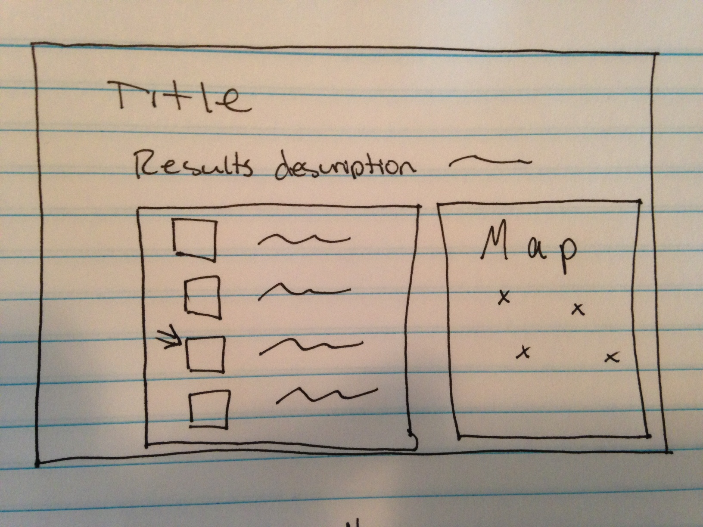

World Heritage Sites with classical architecture in Italy
- The Historic Centre (Chorá) with the Monastery of Saint-John the Theologian and the Cave of the Apocalypse on the Island of Pátmos
- Memphis and its Necropolis – the Pyramid Fields from Giza to Dahshur